Nanako comes from Japan to work with Don
On
3-22-07 Don received this email from Nanako's Dad:
Dear Mr. Don The Mathman,
I am living in ___, Japan and bought your "Calculus
By and For Young People (ages 7, yes 7 and up)" a few years ago for my
8 year-old daughter, who is now in Grade 3 of an International School in ___.
And so she can communicate with anybody in English for her age. I hope that she
will work/study with you for around one week of this summer in 2007 and this
experience will be wonderful for her. Therefore I have some inquiries to ask.
Where in Champaign will she stay and can she alone stay there or is any parent
needed to accompany her while all staying days? And is it possible for her to
continue any other summer camp programs (e.g. sports or language course) held in
Champaign for another week? Thank you for your kindness in advance. I wish that
Champaign's summer days would come true.
Best regards,
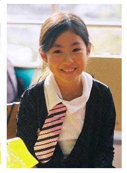
During
the next month or so, it
was finally decided that Nanako will come to Champaign with her Mum, June 17-
June 23. She will work with Don
on math and David Eisenman on language during the same week, then go to Camp __ for 2 weeks, a multicultural summer camp for girls only (near
Chicago).
Nanako's Dad purchased Don's book "Calculus By and For Young People-Worksheets". She brought it with her to study while in Champaign and back home.
Below
is Nanako's schedule for working with Don and Don & Nanako's version of what she did:
Session 1,
Sunday 6-17- 07, 1 hour individual
session:
I had a wonderful session with Nanako. We worked on infinite series 1/2 + 1/4 +1/8 +... (see chapter 1 in my worksheet book). She shared 1 cake (an 8x8 square) between the two of us, each getting 1/2, see her picture below:
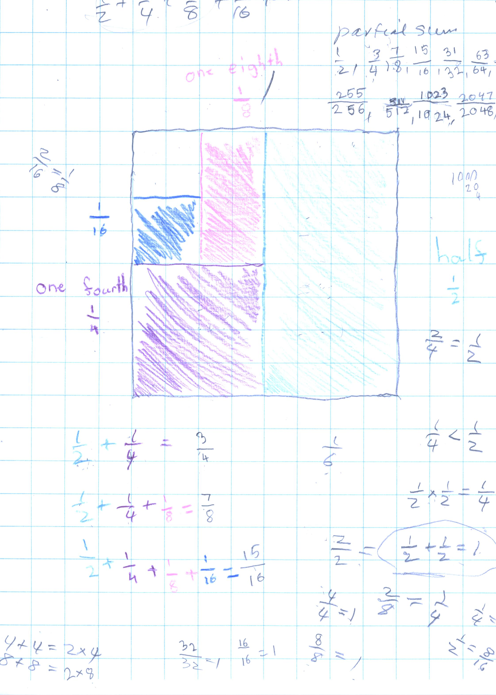
We
talked about 1/2 of 1/2 = 1/2 * 1/2 = 1/4, 1/2 + 1/2 = 1, 31/32 < 1, 2/4=1/2,
2/8 = 1/4. Along the way when, after some thought, she said 1/2 + 1/4 = 1/6, we
looked at the picture and we discussed the fact that 2/4 = 1/2 so 1/2 +
1/4= 2/4+1/4 and she knew this to be 3/4; I also went back to talk about which
is bigger 1/2 or 1/4? she knew that 1/2 > 1/4 and 1/4>1/6 so if she added
1/2 + 1/4 she couldn't get a smaller number like 1/6 (unless we had negative
numbers). The point is that when I get an answer from a student that is
incorrect, I don't say "that's wrong", sometimes I will show them what
the problem is that has their answer, in other words the question that her
answer is the right answer to and/or I have them
look at the picture to see what really works. She found the partial sums 1/2 +
1/4 = 3/4, 1/2 + 1/4 + 1/8 = 7/8 ...and 1023/1024.. what's happening? started
graphing the partial sums.
I also talked with Nanako's Mum, as we worked, to explain what I was doing -like
looking for patterns,
a very important idea. For example, in the denominators and numerators of the
partial sums 1/2, 3/4, 7/8, ... - how do you get from 2
to 4 to 8, ... she first said add 2, but she realized that didn't work, then she
said to add the number 2+2=4, 4+4=8,...which is correct, and I showed her that
4+4 = 2*4 =8 and 8+8= 2*8=16,.. so you are doubling each time. I also showed her
how to multiply 16*2 going from left to right- 2*10 = 20 and 2*6=12 so 20+12= 32
in her head! and 2*32 = 2*30 + 2*2 = 60+4=64. How do you get from the bottom
number (denominator) to the top number (numerator); and are the partial sums
increasing, decreasing or remaining the same; Nanako said they are increasing,
and they were always smaller than 1!
Nanako
worked on the Tower Puzzle and she took it back to the hotel until tomorrow. I
had to remind her that I was 119 years old and she would have to speak a little
louder. We looked at my family pictures, looked at the actual Nautilus shells I
have, and my painting of the shell which then became my logo on my books and on
my website. I also found (as many children do) her answering me with a question
"seven eighths?" I tried to get her to realize that she really knew it
was that and should say it positively. It is a matter of confidence, which I
want her to feel. I think she was confused sometimes and I told her that that
was alright to be confused but we'll work on that. I think most people are
confused about a lot of things, and make mistakes, and that's human.
I also enjoyed Nanako's Mum. She wanted to help
Nanako, as many parents tend to do, because they want to help their child get
the right answers.. but I want the student to figure things out themselves. I
had to muzzle her - in a nice way, of course, and we laughed about it! Mum
learned some things also. She brought a Japanese book to read, but she was too
interested in what Nanako and I were working on to do any reading.
Session 2, Monday 6-18- 07, 1.5 hour individual session:
Nanako came in with some 3-digit by 3-digit multiplication problems she had done on the 1/2" graph paper. The first problem was using Napier's Bones or Lattice Multiplication. She made one mistake which caused 2 errors in the answer. Don found this on Tuesday and brought it to her attention on Wednesday.
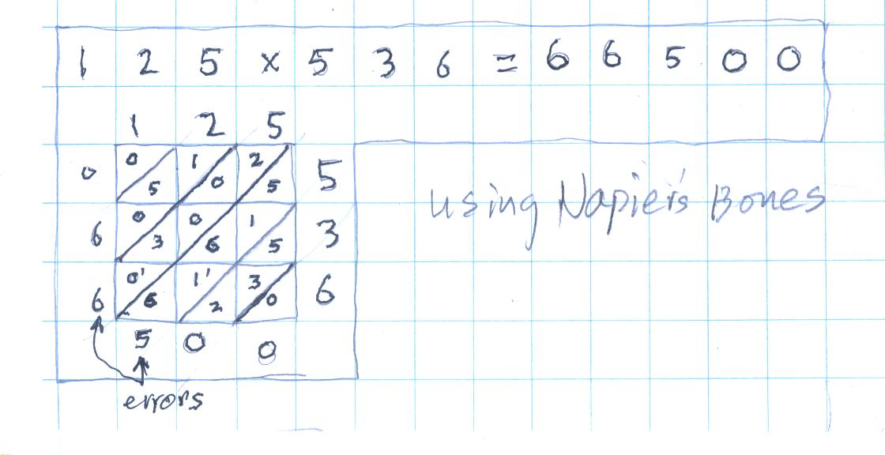
Nanako's mistake was adding 6+1+1(carry)+6+1+5 in the third diagonal from the right to get 20, making a 0 in that, carrying a 2 into the next diagonal to the left, making 7, and the answer should have been 67000.
The second problem was 321x364. On this problem she knew she had done something wrong, but didn't know where her mistake was.
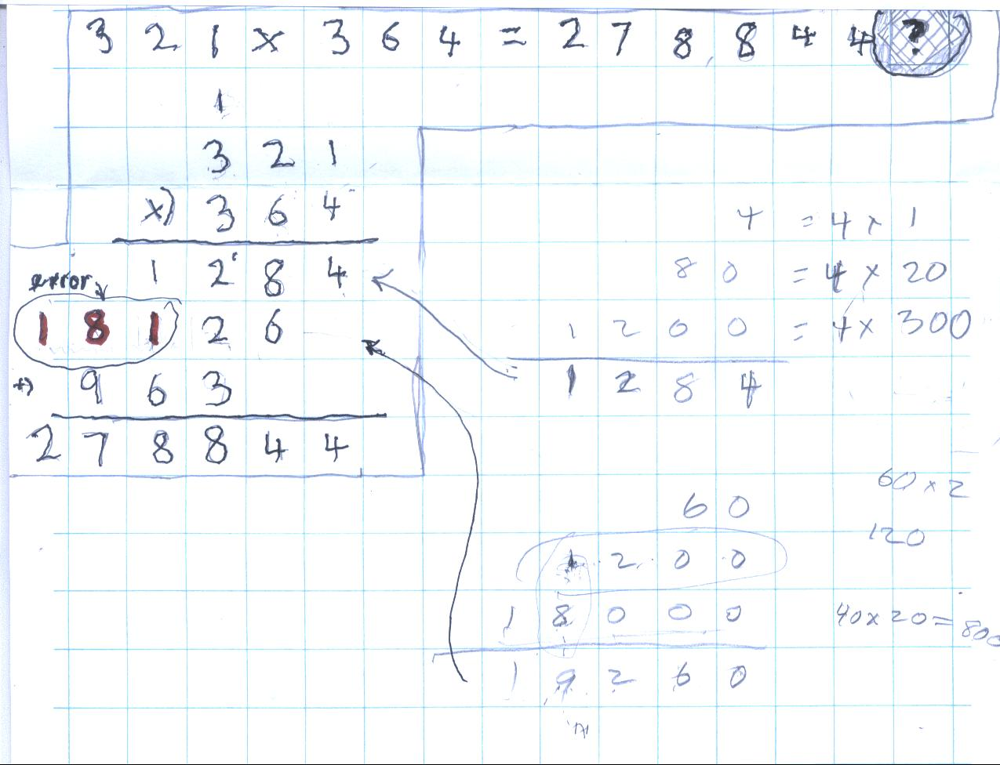
Her mistake was in getting the 2nd partial product below. The 60x1=60, (that's why one moves over 1 place to the left where the 6 goes). In doing 6x2 -really 60x20=1200, the 2 is hundreds, the 1 is thousands. And 60x300=18000 and 18000+1000 = 19000. So the 2nd partial product should be 19260. It easy to say she should have carried the 1 into the thousands place, but that doesn't have as much meaning as using the place value of the numbers being multiplied. See Don's work at the bottom right, above.
Then Nanako did the problem by herself correctly:
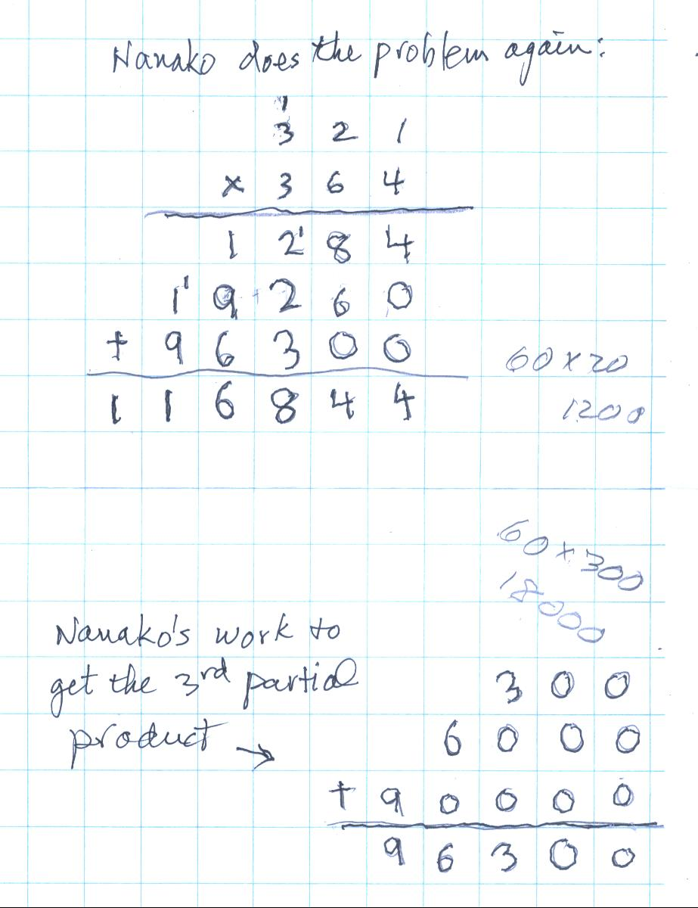
In Nanako's graph below, she was able to see clearly, that the sequence of partial sums was approaching 1.
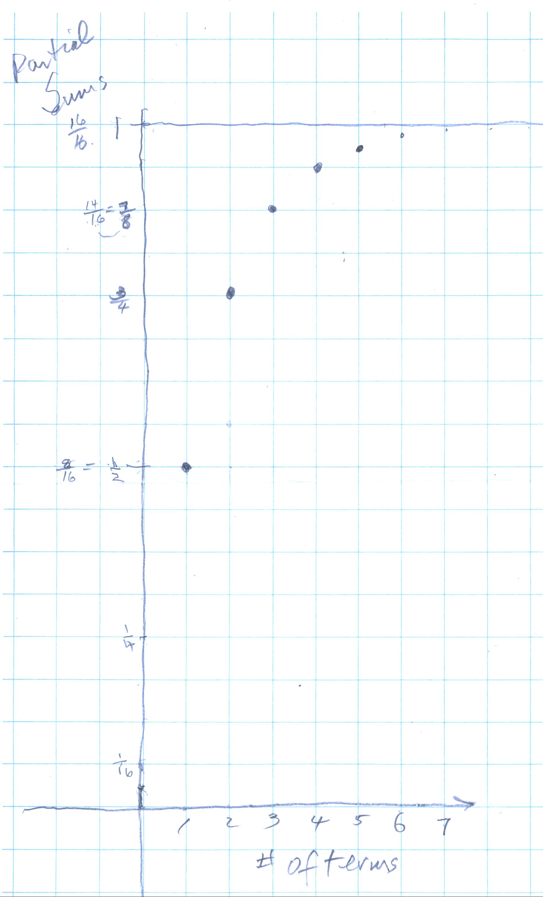
Don got the idea that if Nanako could write the partial sums as decimals, she would be able to see the approach of this sequence to 1 more easily. But she didn't know about decimals. Don got out the cardboard 10x10 square, the 1x10 strips and some 1x1 little squares. ..to be continued
Nanako showed Don how she was able to move four discs on The Tower Puzzle.
She shared 1 cookie between 2 people and found that each person got 1/2 of a cookie. Don referred Nanako to Chapter 2 in his book for more problems.
Session
3, Tuesday 6-19- 07, 2.25 hour individual
session:
Don brought Nanako
and her Mum to the computer and showed them how he works with students
from afar using Yahoo Instant Messenger with a webcam so that Don can write
things that the student can see. Don
invited Nanako's Dad to join him on Yahoo IM. There's a 14 hour difference in
time! We'll see what happens.
Don showed them the Nautilus Shell and the watercolor painting of it, which he made a green and used the copy as a logo on his books, stationary, and his website. He explained why he uses the Nautilus shell: it is beautiful, it is one of the oldest living sea animal, and its curve has a mathematical equation.
Don started Nanako on solving equations by guessing (algebra- chapter 6 in his book). He started her on trying to find a number for x that will make this true: 2x +3 = 17 (read this as 2 times some number you put in for x, add 3 and you have to get 17) . Very quickly she found 7 worked because 2*7+3= 17 was true. Then he gave her 2x + 3 = 18. She found 7 was too small and 8 was too big. She said 2x had to equal 15! Don drew a number line showing every number 7 or less was too small and every number 8 or larger was too big. She first said there was no number between 7 and 8, thought about that some more and decided 7 1/2 might work. She added 7 1/2 + 7 1/2 and realized that was 15 + 3 was 18 and that worked!
Don started Nanako on the infinite series 1/3 + 1/9 + 1/27 + ...
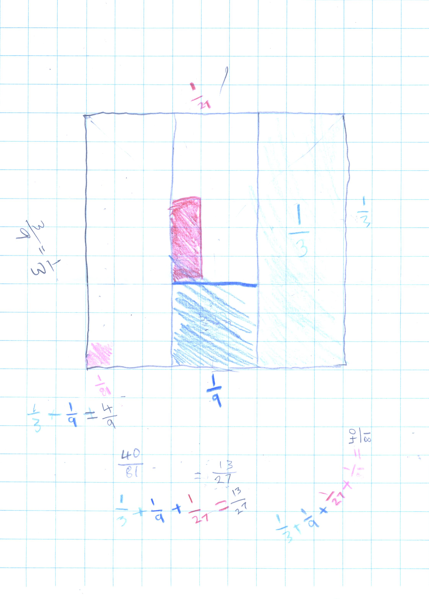
When Don asked Nanako where this series was going, she said 1. Don asked if she really thought adding more tiny pieces, would almost fill the big square. Nanako wasn't ready to answer this.
Don gave them a copy of the videotapes of Strega Nona and The Three Robbers to look at in their hotel, but the hotel didn't have a video player; they will see these at Don's house.
In the building just North of
the hotel, are the offices of Wolfram Research Inc., housing Mathematica,
a computer program created by
Steven Wolfram. Theodore Gray, who works for Wolfram, and former student of Don
many years ago, has invented the Wooden Periodic Table Table which is on the 5th
floor; Don thought it would be worthwhile for Nanako and Mum to see it. Don made contact
with Theo at 3980700
ext. 5551, and he or someone else would be available for them to see it.
Session 4, Wednesday 6-20- 07, 45 min. small group session:
Nanako and Mum got to see Theo's Wooden Periodic Table Table before they came at 4:30 to work with Don. Don had suggested they come to this session because there were twin girls of the same age as Nanako. Their Mom thought they might be pen pals after Nanako returned to Japan. They exchanged email addresses.
Don checked Nanako's work on cookie-sharing that she did last night. We worked more on the decimal<->fraction idea and place value.
Session 5,6,&7, Thursday 6-21- 07, 1 hour individual session and two 45 min. small group sessions at 11 am and 4:30 pm:
Nanako corrected the first 3x3digit lattice multiplication problem above.
Don started Nanako on graphing linear equations, specifically x+y=8 below, because she is 8 years old. She picked up the plotting points quickly and proceeded to find pairs of numbers with negatives numbers, like 9+-1= 8 and plotted (9,-1) and (10,-2) and (-1,9). Then Don asked her to get the numbers for a point half way between 2 others, and proceeded to get (3 1/2, 4 1/2) and she knew that 3 1/2 + 4 1/2 = 8.
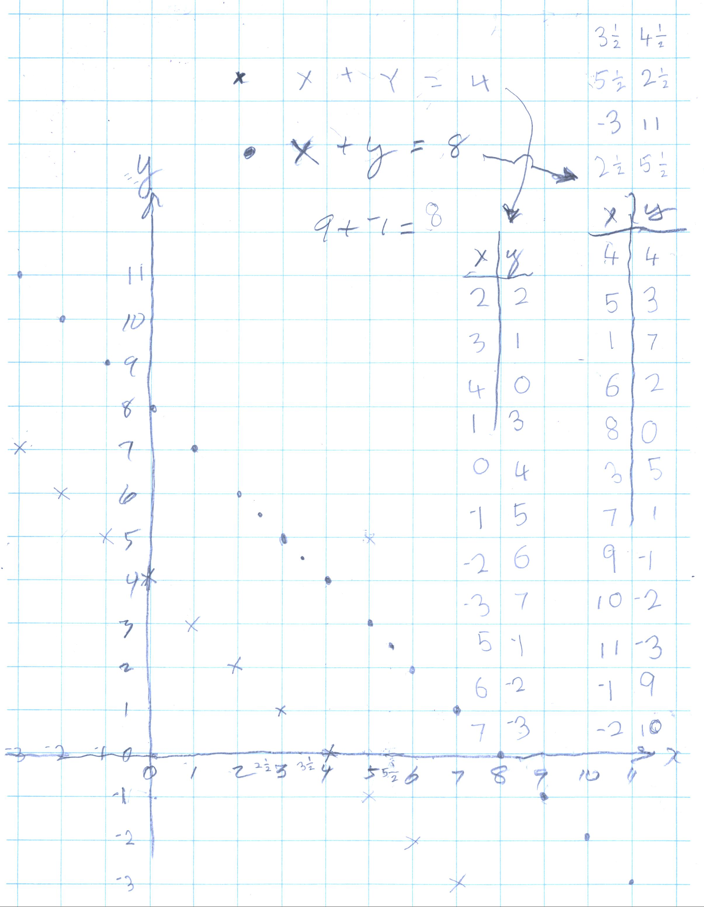
Then Don asked her to change one thing in the
equation, like x+y=4; what would the graph look like? She said it would be
smaller (whatever she meant, I wasn't sure). She proceeded to graph this
equation above. Don told her that the lines will never meet and are parallel.
Again Don asked her to change something in the equation. This time she said she
would try to get a line that went like this / instead of like \. She said she
would move the y-axis to the right, and she proceeded to make the negative numbers on the
x-axis go down to the right, and the positive numbers get bigger to the left!!!
Don had never seen anyone do this before, he was very excited! Here is her graph
using the same equation:
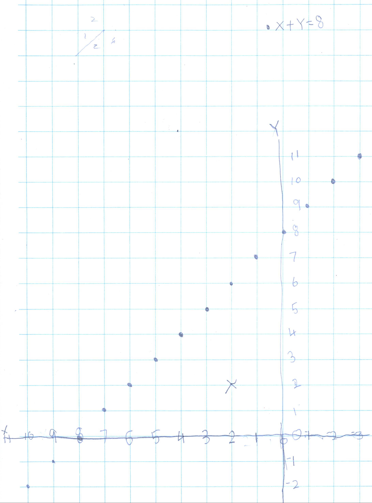
That's exactly what she was trying to do! WOW!! Don asked Nanako how she came to do this, and after thinking about that, she said, "it just popped into my head"!
Don went over the fact that a point like (2,2) marked with the x, was not on the line and the pair of numbers do not make the sentence true, 2+2 = 8 is False. Only the pairs of numbers that make x+y=8 true, will be on that line.
Nanako then glued 1x1x1 cm cubes together to make the 7 Soma pieces. She took the pieces with her to try to make the 3x3x3 cube. We also went over the meaning of the decimal 1.36 as 1 + 3/10 + 6/100.
Session 8, Friday 6-22- 07, 11 am, 1 hour individual session: had lunch, and watched the videotapes
Nanako worked on The Tower Puzzle, counting the minimum number of moves to move the pile from one peg to another (see the rules for this game, click here for sample problems from Ch. 6, #4). Nanako's Mum saw the pattern in the y column- double and add 1, for example, 2*3+1=7, and 2*7+1=15. Nanako saw the pattern in the differences 2, 4, 8, 16...numbers we had in the denominators of the infinite series 1/2 + 1/4 + 1/8 + ... She correctly predicted the # of moves for 5 discs would be 31.
 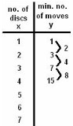
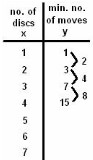
Friday 6-22- 07, 12 Noon:
While we all ate lunch,
Nanako, Mum and Don watched the animated videos of Strega Nona and The
Three Robbers and the wonderful
Cuban music in The Buena Vista Social Club, produced by Ry Cooder.
Session
9, Saturday 6-23- 07, 11 am, 1
hour individual session:
We got out the soap, bucket, glycerine (to make the bubbles stay) and they observed the interesting bubbles formed by the wire tetrahedron and wire cube. Then we formed formed the bubbles between two plastic plates with tacks between them. See the page on Math with Bubbles on Don's website.
We continued the graph the partial sums for the infinite series 1/3+1/9+1/27+... but didn't get past 1/3, and 4/9.
Nanako worked on finding 12x13 in her head, by using the 10x10 squares and 1x10 strips (which Nanako was given); she was able to do 13x17 and 14x16 in her head as well!
Nanako made shapes on the geoboard, drew these on a piece of spotty paper, and found how many cans of paint it would take to cover the inside (find the area).
Session 10, Saturday 6-23- 07, 12 Noon.
After looking at many pictures of sites in North America, Nanako decided she and Don would do their own painting. It was Nanako's fine idea to put in the volcano.

Don scanned the painting and framed the copy for the Math Room, then they framed the original for Nanako to take home.
Sunday 6-23- 07, 7:45 am
Marilyn and Don went to pick up Nanako and Mum to take them from the hotel to the airport, but they were able to get a shuttle bus to take them. We said our sad farewells, Don got The Tower Puzzle from Nanako that she had borrowed, and left them.
Thank you Ken for allowing your wife and child to come to Champaign so Nanako could study with Don and David.
Great job Nanako!!
1. Continue the graph of the partial sums for
the infinite series
1/3 + 1/9 + 1/27 +... , where is it going? Ch. 1
2. Sharing c cookies between p people,
how many do we each get? Use special
scissors (that cut into only 2 equal pieces), to share 1 cookie between 3 people,
Ch. 2
3. Solving equations, Ch. 6
4. Using a geoboard
and colored rubber bands to find the area within shapes, Ch. 13
5. Use the 10x10 squares and 1x10 strips, if necessary,
to do more multiplication in her head, on the salmon colored card. Then try
22x23!
6. Change fractions to decimals.. takes time.
7.
Exponents 23 .. and The Tower Puzzle rule
8. A couple of 3-digit by 3-digit multiplication
problems
To order
Don's materials
Mathman home